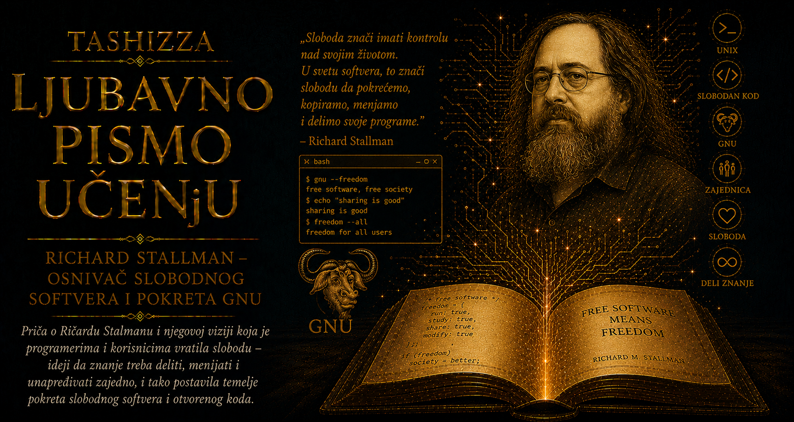

Ljubavno pismo učenju

U istoriji računarstva postoje ljudi čija se veličina prepoznaje u mašinama koje su napravili, jezicima koje su osmislili ili kompanijama koje su osnovali. Richard Stallman pripada ređoj vrsti stvaralaca, jer njegovo najvažnije nasleđe obuhvata pitanje koje je postavio pred čitavu digitalnu civilizaciju: kada računar izvršava program, koliko vlasti nad njim zadržava čovek koji koristi mašinu, a koliko onaj ko kontroliše njen softver? Dok je veliki deo industrije program posmatrao kao tehnički proizvod i tržišnu robu, Stallman je u njemu prepoznao odnos moći. Mogućnost da se kod proučava, menja, deli i prilagođava za njega je postala pitanje ljudske slobode, saradnje i dostojanstva.
Rođen je 16. marta 1953. godine u Njujorku, kao sin Alice Lippman i Daniela Stallmana. Roditelji su mu se razveli dok je bio dete, a Richard je odrastao između dva doma, bez dubokog osećanja da u potpunosti pripada bilo kojem od njih. Kasnije je govorio o detinjstvu obeleženom usamljenošću, napetošću i čestim sukobima sa autoritetima. Imao je snažan um i još snažniju potrebu da razume razlog iza svakog zahteva. Pravilo koje mu niko nije umeo uverljivo objasniti u njemu je budilo otpor i želju da sam ispita njegov smisao.
Njegova majka Alice bila je učiteljica i politički angažovana žena, osetljiva na društvenu nepravdu i položaj pojedinca pred velikim institucijama. Rano je prepoznala izuzetnu inteligenciju svog sina, ali je teško izlazila na kraj sa njegovom tvrdoglavošću, doslovnošću i potrebom da sam procenjuje svaku obavezu. Richard je mogao satima da čita o onome što ga zanima, a zatim da odbije jednostavan zahtev ukoliko mu je delovao proizvoljno. U toj dečjoj osobini nalazilo se jezgro njegove kasnije filozofije: čovek ne bi trebalo da se odrekne sopstvenog rasuđivanja samo zato što zahtev dolazi od nekoga ko poseduje moć.
Brojevi, zagonetke i naučni priručnici pružali su mu svet čija se pravila mogu istraživati, proveravati i razumeti. Kada mu je sa dvanaest godina savetnik u letnjem kampu dao priručnik za računar IBM 7094, Richard ga je čitao sa strašću koju druga deca često čuvaju za pustolovne romane. Pošto nije imao pristup samoj mašini, pisao je programe na papiru i u mislima pratio njihovo izvršavanje. Takvo strpljivo programiranje bez računara otkrilo je njegovu sposobnost da dugo boravi u apstraktnom sistemu, sve dok ne razume njegovu unutrašnju logiku.
Kao srednjoškolac pohađao je subotnji naučni program Univerziteta Kolumbija i pomagao u laboratoriji za biologiju na Univerzitetu Rockefeller. Pokazivao je izrazit dar za matematiku, fiziku i prirodne nauke, pa su pojedini mentori verovali da bi mogao postati uspešan biolog. Računari su ga ipak privlačili snažnije, jer su povezivali formalnu preciznost sa gotovo neograničenom stvaralačkom slobodom. Tokom leta 1970. godine radio je u Naučnom centru kompanije IBM u Njujorku, gde je zadatak iz numeričke analize završio znatno pre predviđenog roka, a preostalo vreme iskoristio za razvoj uređivača teksta u jeziku APL i pretprocesora za PL/I.
Iste godine upisao je Harvard. Na izuzetno zahtevnom kursu matematike Math 55 isticao se brzinom razumevanja i sposobnošću da rešava probleme koji su druge studente dugo zaustavljali. Među ljudima koji su delili njegovu strast prema apstraktnom mišljenju otkrio je sredinu u kojoj je njegova neobičnost mogla postati prednost. Diplomirao je fiziku 1974. godine sa visokim počastima, ali je njegov pravi intelektualni dom već postala Laboratorija za veštačku inteligenciju Masačusetskog instituta za tehnologiju.
U MIT-ovu laboratoriju ušao je 1971. godine kao osamnaestogodišnjak. Bila je to jedna od najneobičnijih intelektualnih zajednica svoga vremena. Programeri su sebe nazivali hakerima, pri čemu je ta reč označavala domišljatog graditelja koji razume sistem dovoljno duboko da pronađe elegantan način da ga poboljša. Delili su izvorni kod, popravljali programe svojih kolega, ostavljali računare dostupnim drugim istraživačima i cenili uspešno programsko rešenje gotovo kao muzičari nadahnutu improvizaciju.
Richard je u toj zajednici postao poznat po inicijalima RMS, kojima je označavao svoje računarske naloge i izmene programa. Oko njega su radili Richard Greenblatt, Gerald Sussman, Marvin Minsky i drugi pioniri veštačke inteligencije. Stallman je sa Sussmanom učestvovao u istraživanjima metoda zaključivanja i održavanja istinitosti, ali se njegova najveća snaga pokazivala u sistemskom programiranju. Mogao je satima da prodire u najdublje slojeve računarskog sistema, uočava veze koje su drugima izmicale i preuređuje složen mehanizam u skladniju celinu.
Život hakera u laboratoriji nije pratio uobičajeni ritam kancelarije. Radilo se noću, spavalo u nepredvidivim časovima, a razgovor o programu mogao je početi pored terminala i nastaviti se satima. Znanje je kružilo neposredno, bez svečanih predavanja i strogo određenih uloga učitelja i učenika. Početnik je učio čitajući rad iskusnijeg kolege, dok je sveža primedba manje iskusnog člana ponekad otkrivala nešto što su ostali prestali da primećuju. Stallman je u takvom okruženju prvi put stekao snažno osećanje pripadnosti.
Prezirao je lozinke jer su mu izgledale kao simbol nepoverenja među članovima zajednice. Kada je uveden sistem tajnih lozinki, podsticao je korisnike da izaberu prazan niz znakova i tako odbiju novu kulturu skrivanja. Njegov stav mnogima je delovao preterano, ali je otkrivao osobinu koja će pratiti čitav njegov život. Tehničku odluku posmatrao je i kao odluku o međuljudskim odnosima, jer način na koji je sistem konstruisan određuje ko kome veruje, ko ima pristup znanju i ko može da utiče na zajednički rad.
U laboratoriji je razvio i rani Emacs, uređivač teksta izrastao iz skupa proširivih makroa za editor TECO. Korisnik je mogao da menja njegovo ponašanje i prilagođava ga sopstvenom načinu rada. Ta mogućnost odražavala je Stallmanovu programersku intuiciju: kvalitetan alat ostavlja prostor korisniku da postane saradnik. Program koji se može proučavati i proširivati pretvara iskustvo jednog čoveka u polaznu tačku za stvaralaštvo mnogih drugih.
Priča o Xeroxovom štampaču postala je najpoznatija slika preokreta u njegovom životu. Laboratorija je ranije koristila uređaj čiji je upravljački program bio dostupan programerima. Pošto se štampač nalazio daleko od terminala, korisnici nisu odmah primećivali da se papir zaglavio. Kod je zato prilagođen tako da sistem pošalje upozorenje ljudima čiji dokumenti čekaju, pa bi neko otišao do uređaja, uklonio zastoj i omogućio svima da nastave rad.
Stallman je u toj maloj izmeni video prirodan oblik kolegijalnosti. Neko je uočio teškoću koja je pogađala čitavu grupu, razumeo tehnički uzrok i svoje znanje pretvorio u rešenje dostupno svima. Obaveštenje sa štampača štedelo je vreme, ali je istovremeno podsticalo ljude da pomognu jedni drugima. Program je povezivao pojedince rasute po laboratoriji i pretvarao kvar jedne mašine u zajednički, brzo rešiv problem.
Novi Xeroxov laserski štampač stigao je bez dostupnog izvornog koda upravljačkog programa. Uređaj je bio napredniji, dok se korisno upozorenje više nije moglo dodati. Stallman je saznao da istraživač na drugom univerzitetu poseduje kod i zamolio ga da ga podeli, ali ga je kolega odbio zbog ugovora o poverljivosti. Stallmana je zabolelo saznanje da čovek koji razume isti problem može ugovorom obećati kompaniji da neće pomoći drugim programerima.
Spor oko upravljačkog programa otkrio mu je svet u kojem poslovna tajna prekida prirodnu solidarnost među ljudima koji rade na srodnim problemima. Nestajala je mogućnost da programer uči iz tuđeg koda, da uočeno poboljšanje vrati zajednici i da svojom veštinom olakša svakodnevni rad kolega. Stallman kasnije nije predstavljao tu epizodu kao jedini uzrok svoje pobune, ali je ona u njegovom sećanju sačuvala ljudsku cenu zatvaranja znanja.
Promena je sazrevala dok se čitavo okruženje oko njega raspadalo. Krajem sedamdesetih i početkom osamdesetih softver je postajao posebna industrijska roba, a kompanije su uvodile licence, poslovne tajne i ugovore koji su ograničavali kopiranje. Mnogi hakeri iz MIT-ove laboratorije odlazili su u privatne kompanije koje su razvijale Lisp mašine. Nekadašnji saradnici postajali su poslovni konkurenti, a kod koji su zajedno stvarali prestajao je da slobodno kruži.
Posebno bolan bio je sukob povezan sa kompanijama Lisp Machines, Inc. i Symbolics. Kada je Symbolics prestao da deli svoja poboljšanja sa MIT-em, Stallman je mesecima samostalno ponovo implementirao njihove izmene kako bi laboratorijski sistem ostao ravnopravan. Bio je to izuzetan tehnički podvig i iscrpljujući lični rat. Nekadašnja zajednica prijatelja pretvarala se u mrežu suprotstavljenih poslovnih interesa, a Stallman je pokušavao da sopstvenim radom nadoknadi ono što je izgubljeno prestankom saradnje.
Raspad laboratorijske zajednice doživeo je dublje od većine svojih kolega. Drugi su promenu mogli prihvatiti kao prelazak u novu industriju i priliku za profesionalni napredak. Stallman je gubio jedino okruženje u kojem je osećao da pripada. Laboratorija mu je pružila društveni oblik života usklađen sa njegovom potrebom za otvorenošću, intelektualnom autonomijom i zajedničkim rešavanjem problema. Odlaskom saradnika izgubio je i svet u kojem je znao kako da bude čovek među ljudima.
Mogao je da prihvati dobro plaćen posao, potpiše ugovor o tajnosti i svoje znanje stavi u službu sistema koji je smatrao štetnim. Razmatrao je i mogućnost da sasvim napusti računarstvo. Izabrao je zahtevniji put: odlučio je da ponovo izgradi zajednicu tako što će joj najpre stvoriti tehničke temelje. U septembru 1983. godine objavio je plan da napravi GNU, potpuno slobodan operativni sistem nalik Unixu.
Početkom 1984. napustio je zaposlenje u MIT-u kako institucija ne bi mogla da polaže pravo na programe koje će stvarati za GNU, iako je zadržao pristup laboratoriji. Godine 1985. objavio je GNU manifest, tekst koji je istovremeno predstavljao tehnički plan, društveni program i poziv ljudima da se pridruže. Programeri su mogli zarađivati od podrške, prilagođavanja i stručnog rada, dok bi korisnici zadržavali pravo da međusobno dele programe i pomažu jedni drugima.
Središnja nit njegovog rada postala je sloboda korisnika. Engleska reč free mogla je označavati i slobodu i odsustvo cene, pa je Stallman uporno objašnjavao da govori o slobodi nalik slobodi govora. Program je smatrao slobodnim kada korisnik može da ga pokrene u bilo koju svrhu, prouči njegov izvorni kod, prilagodi ga sopstvenim potrebama, podeli kopije i drugima ponudi poboljšane verzije.
Ta prava nije posmatrao kao povlasticu programera. Korisnik koji nikada neće samostalno pročitati izvorni kod ipak zavisi od mogućnosti da ga nezavisni stručnjaci prouče, poprave i provere. Kada kod kontroliše samo proizvođač, on može odlučivati koje će podatke prikupljati, kada će ukinuti određenu funkciju i kako će korisnika vezati za sopstvenu platformu. Stallman je vrlo rano upozoravao da digitalna kontrola lako prerasta u društvenu kontrolu.
Njegovo najdovitljivije pravno sredstvo dobilo je ime copyleft. Autor programa dozvoljava drugima da ga koriste, proučavaju, menjaju i dele, uz uslov da iste slobode ostanu sačuvane u izvedenim verzijama koje se dalje distribuiraju. Ta ideja postala je osnova GNU Opšte javne licence. Stallman je tako razmišljao o kodu kao o tehničkom delu, društvenom odnosu i pravnom predmetu čija pravila određuju način na koji znanje putuje među ljudima.
Godine 1985. osnovao je Free Software Foundation kako bi GNU dobio organizacionu podršku. U prvim godinama napisao je ili pokrenuo razvoj nekih od najvažnijih delova budućeg sistema. GNU Emacs postao je jedno od najuticajnijih programerskih okruženja, GNU Debugger omogućio je praćenje ponašanja programa tokom izvršavanja, dok je GNU C Compiler pokazao da slobodan alat može biti tehnički vrhunski i pouzdan u ozbiljnom razvoju.
Njegovi programi odražavali su njegov karakter. Bili su moćni, proširivi i namenjeni ljudima koji žele da razumeju sistem. Stallman je sa izuzetnom disciplinom pisao kod, dokumentaciju, licence, političke eseje i odgovore korisnicima. Živeo je skromno, dugo bez automobila, televizora, hipoteke i uobičajenih porodičnih obaveza. Putovao je sa računarom i malim brojem stvari, održavajući predavanja širom sveta i podređujući svakodnevne odluke načelima koja je zastupao.
Takva doslednost izazivala je divljenje i nelagodu. Odbijao je vlasničke programe čak i kada su bili udobniji, izbegavao uređaje čiji ključni softver korisnik ne može zameniti i mobilne telefone opisivao kao sredstva praćenja. Protivio se softverskim patentima, tajnim formatima, digitalnim ograničenjima i mrežnim uslugama koje korisniku oduzimaju kontrolu nad podacima. Kritičari su u njegovim izborima videli čistunstvo koje udaljava obične ljude, dok su pristalice smatrale da je pokretu potreban čovek spreman da pokaže gde kompromis počinje da potiskuje prvobitni cilj.
Njegov jezik bio je namerno precizan, ponekad do iscrpljujuće doslednosti. Insistirao je na izrazu „slobodni softver” kada su drugi govorili o „otvorenom kodu”, jer je otvorenost opisivala razvojni metod, dok je sloboda izražavala etičko merilo. Tražio je da se sistem sastavljen od GNU alata i Linux jezgra naziva GNU/Linux, želeći da sačuva istorijsko pamćenje rada GNU zajednice i poruku zbog koje je taj rad započet.
Njegova borba za precizan naziv nije se uvek mogla lako odvojiti od lične potrebe za priznanjem. Kada je Linux jezgro povezano sa GNU alatima, nastao je praktičan slobodni operativni sistem, a Linus Torvalds postao je njegovo najprepoznatljivije lice. Stallman je ukazivao da jezgro predstavlja jedan deo celine i da su godine rada GNU projekta stvorile veliki deo okruženja potrebnog za njegovu upotrebu. Govorio je da čuva poruku o slobodi, ali je umeo da prizna da poseduje ego i da ne može uvek pouzdano proceniti koliko lična povređenost utiče na njegove reakcije.
U toj napetosti vidi se jedna od njegovih najdubljih protivurečnosti. Čovek koji je branio saradnju često je otežavao zajednički razgovor, jer je sagovornike ispravljao pre nego što bi saslušao celinu njihovog pitanja. Njegova potreba za pojmovnom preciznošću bila je dragocena pri pisanju licenci i razotkrivanju skrivenih tehnoloških ograničenja. U neposrednim odnosima ista osobina mogla je delovati kruto, zamorno i bez dovoljno obzira prema osećanjima drugih ljudi.
Razlika između Stallmana i Torvaldsa često se opisivala kao razlika između filozofa i pragmatičnog inženjera. Torvalds je naglašavao kvalitet razvoja i saradnju koja daje dobre tehničke rezultate, dok je Stallman svaki izbor procenjivao prema slobodi koju pruža korisniku. Njihova dela spojila su se u sistem koji je promenio računarstvo, iako su njihovi jezici i prioriteti ostali različiti. Jedan je prvenstveno govorio o programu koji dobro radi, a drugi o raspodeli moći između programa i njegovog korisnika.
Stallmanova sklonost igri reči predstavljala je način razmišljanja. Rekurzivni akronimi, preimenovanja i jezičke intervencije pomagali su mu da razotkrije pretpostavke skrivene u uobičajenim izrazima. U javnim nastupima pojavljivao se i kao sveti IGNUcije, „svetac Crkve Emacsa”, sa oreolom načinjenim od računarskog diska. Humorom je ismevao tehnološke dogme i sopstveni javni lik, dok je osnovni zahtev za slobodom korisnika ostavljao ozbiljnim.
Decenijama je putovao kao politički govornik i obraćao se programerima, studentima, nastavnicima, pravnicima, državnim službenicima i aktivistima. Posebno je insistirao na upotrebi slobodnog softvera u školama. Smatrao je da učenici treba da upoznaju način na koji sistem radi, da čitaju kvalitetan kod, dele znanje sa vršnjacima i razvijaju sposobnost da tehnologiju prilagode potrebama svoje zajednice. Škola koja učenike navikava na proizvod samo jednog proizvođača, prema njegovom shvatanju, priprema ih za zavisnost, dok slobodan softver podstiče radoznalost, saradnju i intelektualnu samostalnost.
Njegova upozorenja dobijala su novu težinu dok su programi ulazili u automobile, medicinske uređaje, kućne aparate, komunikacione mreže i državne sisteme. Softver može ograničiti popravku proizvoda, prikupljati podatke, promeniti ponašanje uređaja nakon kupovine ili ga učiniti neupotrebljivim kada udaljeni server prestane da radi. Stavovi koji su nekada delovali preterano počeli su da podsećaju na opis svakodnevice u kojoj čovek poseduje uređaj, ali nema potpunu kontrolu nad njegovim ponašanjem.
Pošten prikaz njegovog života mora obuhvatiti i događaje iz 2019. godine. Tokom rasprave na MIT-ovoj elektronskoj listi povezane sa skandalom Jeffreyja Epsteina i optužbama protiv preminulog profesora Marvina Minskog, Stallman je izneo komentare čije su formulacije mnogima delovale hladno i neosetljivo prema širem kontekstu seksualnog iskorišćavanja i institucionalne odgovornosti. Posle snažne javne kritike podneo je ostavku na mesto predsednika Free Software Foundation i napustio položaj gostujućeg naučnika na MIT-u.
Taj događaj pokazao je granice njegove sklonosti da emocionalno i moralno opterećene situacije razlaže kao logičke iskaze. Preciznost koja mu je pomogla da oblikuje licence nije uvek bila dovoljna za razgovor o ranjivosti, traumi i neravnoteži moći među ljudima. Njegove pristalice smatrale su da su njegove reči predstavljene bez potrebnog konteksta, dok su kritičari ukazivali na dužu istoriju ponašanja zbog kojeg su se pojedini ljudi osećali nepoželjno u zajednicama povezanim sa njim.
Stallman se 2021. godine vratio u upravni odbor Free Software Foundation, što je izazvalo nove podele. Jedni su povratak doživeli kao priznanje osnivaču čiji je doprinos pokretu izuzetan, dok su drugi smatrali da organizacija zanemaruje iskustva ljudi koji su godinama ukazivali na probleme u njegovom ponašanju i vođstvu. Čovek koji je čitav život govorio o moći institucija našao se pred pitanjem kako njegova sopstvena moć utiče na zajednicu koju je osnovao.
Tokom obeležavanja četrdeset godina GNU projekta 2023. godine saopštio je da boluje od folikularnog limfoma. Pred publikom se pojavio fizički promenjen terapijom, ali sa istom namerom da govori o softverskoj slobodi. Kasnije je objavio da je bolest u remisiji. Javnost je u tom trenutku mogla da vidi krhkost čoveka koji je decenijama delovao gotovo potpuno pretvoren u svoju misiju.
Stallmanovo nasleđe obuhvata dostignuća hiljada ljudi koji su razvijali GNU alate, licence, dokumentaciju i zajednice. Njegov jedinstveni doprinos nalazi se u preobražaju običaja jedne male hakerske kulture u jasno oblikovanu etičku teoriju, tehnički projekat, pravni mehanizam i međunarodni pokret. Razumeo je da dobra volja može iščeznuti zajedno sa ljudima koji je nose, pa je slobodu ugradio u licencu; znao je da licenca bez upotrebljivih programa ostaje nedovoljna, pa je pisao kompajlere, uređivače i alate; video je i da programi ne mogu sačuvati svoju društvenu svrhu ako korisnici zaborave zbog čega su njihova prava važna, pa je postao neumorni govornik i čuvar pojmova.
Njegov život istovremeno upozorava da odanost velikom principu ne oslobađa čoveka potrebe za empatijom, samopreispitivanjem i odgovornošću prema ljudima u njegovoj blizini. Dalekovidost u razumevanju institucija može postojati zajedno sa nespretnošću u razumevanju pojedinačne ranjivosti. Stallmanove snage i slabosti često su izrastale iz iste nepopustljive doslednosti koja mu je omogućila da decenijama brani ideju od koje bi se pragmatičniji čovek možda odavno udaljio.
Danas, kada se programi zaključavaju u uređaje koje smo kupili, algoritmi određuju sadržaje koje vidimo, a udaljene platforme čuvaju naše razgovore, dokumente i uspomene, njegovo pitanje postaje sve teže izbeći. Potrebno je razmišljati o tome kome tehnologija daje moć, kome oduzima izbor i koliko čovek ostaje gospodar sopstvenog digitalnog života. U kodu se nalaze odluke koje utiču na komunikaciju, rad, sećanje, obrazovanje, kupovinu, kretanje i privatnost.
Richard Stallman svoju poruku retko je činio udobnom, jer je želeo da ljudi primete ograničenja koja su naučili da prihvataju kao prirodna. Njegovi programi promenili su računarstvo, njegove licence način na koji zajednice grade zajedničko znanje, a njegova upornost unela je reč „sloboda” u razgovor koji bi lako mogao ostati ograničen na cenu, brzinu i tehničku efikasnost.
Zato njegova biografija pripada istoriji učenja. Govori o darovitom, usamljenom, zahtevnom i protivurečnom čoveku koji je u zajednici programera pronašao svoj prvi pravi dom, a zatim pokušao da obnovi njegov duh kada se ta zajednica raspala. U svetu koji znanje često pretvara u zatvorenu robu branio je mogućnost da ono kruži, raste i prelazi iz ruke u ruku. Iza svih njegovih programa, licenci, sukoba i neumornih rasprava ostaje ideja da čovek u sopstvenom računaru treba da bude stvaralac sposoban da razume, menja i deli digitalni svet koji gradi zajedno sa drugima.